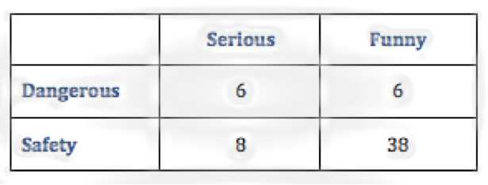

How does our mood impact our recall of advertisements?
While research on how mood affects consumer behavior is substantial, relatively little is known about how mood inducement from television shows effects viewers’ responses to advertising. A research study by Kamins, Mark, and Skinner (1991) began to delve into this question by examining the effect of the mood induced by television show content on subjects’ evaluation of advertisements. They found that participants viewing a happy advertisement evaluated it more positively on various measures of advertising effectiveness when the show they were watching was designed and observed to induce a happy mood rather than a sad mood. Moreover, the participants who viewed a sad commercial evaluated it significantly more favorably when the show they were watching was designed and observed to induce a sad mood rather than a happy mood. This suggested that participants favored advertisements that were mood congruent with the television shows they were viewing.
Later on in 1991, researchers Olney, Holbrook and Batra investigated the effects of advertising on the technological developments of remote controls and VCRs, which allowed individuals to either switch the channel or fast-forward through an unwanted advertisement. Their study focused on the variance in viewing time explained by three attitudinal components (hedonism, utilitarianism, and interestingness), two emotional dimensions (pleasure and arousal), and the uniqueness of the advertisement content. They also examined the mediating roles of intervening variables along a hierarchical chain of effects in which advertising content influences emotions and attitude toward the advertisement, which in turn effects viewing time. They found that interestingness and hedonism, but not utilitarianism influenced viewing time and that advertising content moderated the different dimensions.
Similarly, the trend towards a new method of watching television has brought forth a fresh set of questions. Individuals are increasingly moving away from watching television shows on a television set and instead opting to watch them online. The viewer generally does not have the option of removing the advertisements or fast-forwarding through them. However, they are given a choice of which advertisement out of two or three possible advertisements they want to view. Since the literature suggests that emotion, attitude, and viewing behavior could be moderately explained by advertising content, we wanted to determine whether content congruence is as important in the rating of advertisements as mood congruence is. If mood congruence and/or content congruence is important in determining which advertisements individuals choose to watch, as well as how well they recall the information, then advertising companies would be better able to more precisely place their advertisements to maximize viewing time.
This study examined the effect of mood and content congruence on the recall and perception of advertisements. Wellesley College students (N=59, 100% female) reported how enjoyable and important, among other variables, four advertisements of varying mood (serious, funny) and content (danger, safety) were after watching a 10-minute movie clip that induced a serious mood and dangerous content. Following a second movie clip to re-induce the serious mood and dangerous content, they indicated which advertisement they would choose to watch again. Based on previous research, we expected the viewers to prefer the advertisements that were mood and content congruent with the movie clip.
The ANOVA of ad-related memory recall revealed a significant main effect for content of advertisement, F(1,58) = 4.87, p < .05, that was qualified by a significant Mood x Content interaction, F(1,58) = 30.98, p < .001, as can be seen in Figure 8. Participants had significantly better recall for advertisements with dangerous content relative to safety content. However, this was only the case when the dangerous content was paired with a funny mood. Participants had worse recall when the advertisement had dangerous content and a serious mood, compared to safety content with serious mood. Participants had the worst recall in the safety content, funny mood condition, which was both mood and content incongruent with the movie clip.
The ANOVA of ad-related enjoyment of advertisements revealed a significant main effect for mood of advertisement, F(1,58) = 19.63, p < .001, indicating the funny advertisements were more enjoyable than the serious advertisements. There was also a significant main effect for content of advertisement, F(1,58) = 60.26, p < .001, indicating that the safety advertisements were more enjoyable than the dangerous advertisements. However, these main effects were qualified by a significant Mood x Content interaction, F(1,58) = 6.05, p < .05, as can be seen in Figure 9. There is a clear preference for the safety content; however, participants liked the safety content even more when it was funny than when it was serious. They enjoyed the mood and content incongruent advertisement significantly more, which may explain why they had the worst recall for it. General psychological literature has found that a positive mood leads to worse recall for details, whereas a negative mood has the opposite effect.
The ANOVA of ad-related importance of advertisements revealed a significant main effect for mood of advertisement, F(1,58) = 20.13, p < .001, indicating the serious advertisements were more important than the funny advertisements. There was also a significant main effect for content of advertisement, F(1,58) = 261.55, p < .001, indicating that the safety advertisements were more important than the dangerous advertisement. However, these main effects were qualified by a significant Mood x Content interaction, F(1,58) = 7.91, p < .010, as can be seen in Figure 11. The safety advertisements were seen as significantly more important than the dangerous advertisements; however, the safety advertisement that was serious in mood was rated significantly more important than the safety advertisement that was funny in mood. This is interesting because we might expect people to have better recall for the advertisements that they deem most important. However, this was not the case.
When given the option to choose which of the four advertisements they would want to see again, the Chi Square, X2(1)=5.53, p < .02, indicated that the funny, safety advertisement was the overwhelming choice. The funny, safety advertisement was both mood and content incongruent with the serious, danger movie clip.

The results ultimately revealed that individuals had the highest recall for the most arousing advertisements and the lowest recall for the advertisements they found to be the most enjoyable. In contrast to previous studies, the advertisements they rated the highest in enjoyment and importance were mood and content incongruent. They also overwhelmingly chose to view the mood and content incongruent (funny, safety) advertisement again. There are, however, certainly limitations to the generalizability of the study. It would be beneficial to have a more random sample. In addition, we suspect that the second movie clip might have been boring and therefore, have reduced the mundane realism. It is likely that people are going to be interested in the television show or movie clip that they have chosen to watch. It would advantageous to report actual data on ad choice from sites like hulu.com to enhance the mundane realism.